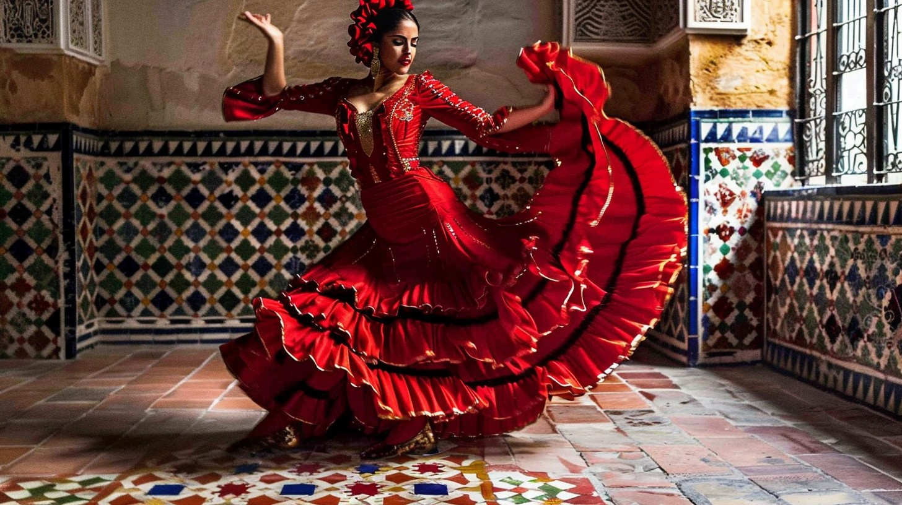
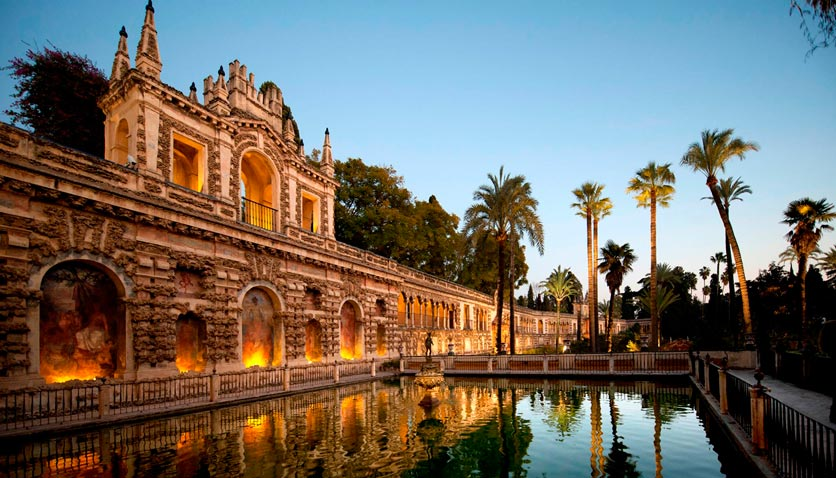
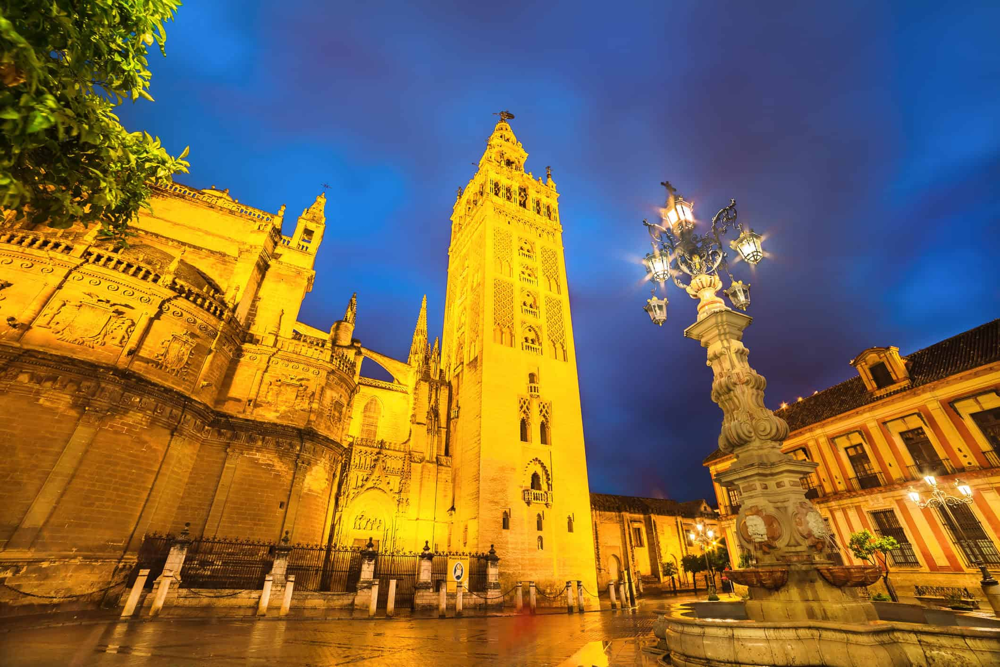

Seville is southern Spain at its most romantic: Moorish palaces, tiled plazas, orange trees on every street, and the city where flamenco was born. It’s small, flat and still warm in autumn, so we can wander all day, stop for a tapa whenever we like, and come back to a pool on the roof.
The weekend

Saturday31 Oct
Tapas at Eslava and flamenco at five.

Sunday1 Nov
The Alcázar, boats at Plaza de España, lunch in Triana.

Monday2 Nov
Up the Giralda, one last lunch, home.
Things you might love
- 💃 Flamenco, at the early show so Freya can come.
- 🏰 The Alcázar, a royal palace of tiles and gardens, with peacocks.
- 🍷 Tapas the Seville way. One tapa, one drink, next bar.
- 🚣 A rowing boat at Plaza de España.
- 🏺 Triana, the old potters’ quarter across the river.
- 🌅 Las Setas at sunset, walking on top of the city.
- 🧖 Time for you, with a massage while Freya and I swim.
All Saints’ weekend
Sunday is Todos los Santos, a national holiday. Look for huesos de santo (marzipan “bones”) and buñuelos (cream doughnuts) in the bakery windows. You only see them this weekend.
More
Anything you’d change? Tell me, and I’ll rework it. It’s your weekend.